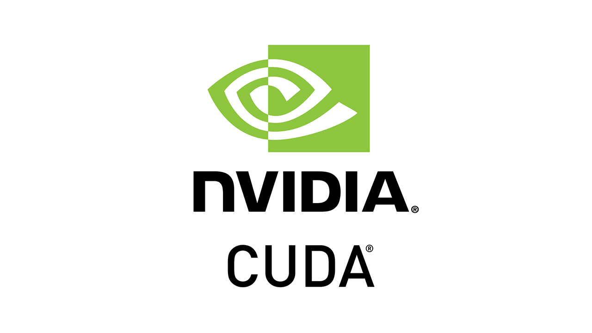

I am a dynamic MSc student specializing in C++ and CUDA programming, driven by a relentless pursuit of excellence and a profound passion for harnessing hardware acceleration.
During my tenure at CNR-ISTEC, I had the privilege of participating in collaborative international research projects. This experience honed my research skills and enriched my ability to thrive in diverse, multicultural teams, fostering a global perspective in my work.
Moreover, my journey at NECSTLab provided me with invaluable opportunities to bridge the gap between cutting-edge research and real-world applications. Here, I not only developed robust software solutions but also presented our research findings at industries and conferences, demonstrating my ability to translate complex technical concepts into actionable insights.
I firmly believe in the transformative power of networking and collaboration. Let's contact me to explore synergies, exchange insights, and foster valuable professional relationships. Together, we can drive innovation and make a lasting impact in our respective fields.
About Me
My Projects


Pair-HMM in haplotype calling
Developed a GPU-based implementation of the Pair-HMM forward algorithm
boosting flexibility and achieving a remarkable speedup
compared to existing methods. The project was accepted for the "Best Student Research Video & Poster Competition"
at the EUROCON2023 conference.
Final test of Software Engineering
Contributed to the development of 'My Shelfie', a Java-based implementation of
the popular board game. The graphical user interface (GUI) was implemented
using JavaFX. Collaborated on the design of a robust network handler, utilizing
a combination of RMI and Socket to enable seamless connections to the server
through various protocols.
Final test of Logical Networks
VHDL implementation of a simple logic circuit.The aim is to evaluate the ability of students to use the Vivado tool and their fluency in FSM design.

GPU-101
Implemented Gauss-Seidel algorithm for sparse matrices on Nvidia GPUs, achieving an average improvement of 31 times compared to the serial version.
Final test of algorithms and principles of computer science
Created a C implementation of a more complex variant of the game Wordle specifically for the Linux terminal. Demonstrated proficiency in designing efficient data
structures to represent the game and ensure scalability. The project served as an evaluation of student’s ability to devise effective data structures for handling the
intricacies of the advanced game mechanics.